Introduction
Lumen keeps all your photos in one place. You show it where your photos are, and it makes a library of them: small pictures you can look through quickly, star ratings, albums, and everything your camera recorded about each shot. When you want to make a photo look better, you do it in Lumen too: brighter, warmer, straighter, cropped. Then you export a copy to share.
Lumen never changes your photos. Your files stay exactly as they were, wherever they are. What you change in Lumen is kept in the library, and only goes into a new file when you export one.
From the author
About this guide
The guide comes with Lumen: choose User guide from the menu on Lumen's icon bar icon, and it opens in your web browser (NetSurf, for example). If no web browser is set up, Lumen tells you so. The file itself is !Lumen.Guide.index/html, if you'd rather open it yourself.
You don't need to read it in order. If you're new to photo libraries, start at Part I and do the Try it examples as you go. By the end of Chapter 5 you'll have a library of your own, with your best photos starred. If you only want to improve one photo, go to Part III.
The pictures are screenshots of Lumen running on RISC OS 5, with photos by the author, Andrew Youll: horses, eventing, jousting and dogs (see Photo credits).
This is an early version
Lumen 0.0.34 is a test version. It's still being tested, so you may come across bugs. Lumen never writes to your photos, so they're safe; and if you change a photo's look by mistake, Ctrl+Z takes it back (Chapter 10).
What we assume you know
Not much. You should know the three mouse buttons (Select on the left, Menu in the middle, Adjust on the right), and how to drag a file or directory from a Filer window into a program. You don't need to know anything about photography.
The boxes in this guide
Where to start
If Lumen isn't installed yet, start at Chapter 2. If it is, go to Chapter 3. The Appendix lists every key, mouse action and menu on one page; it's worth printing.
Part I: Getting StartedInstalling Lumen and finding your way round
1 What Lumen does
Lumen is a photo library and non-destructive editor for RISC OS. It has three jobs:
- Keeping: your photos in one library, sorted into projects (one for each directory you bring in), albums (your own collections, such as "Favourites" or "Holiday 2026"), smart albums that fill themselves, and stacks of photos that belong together.
- Sorting: star ratings from one to five, flags, rejects, captions and keywords, searching and filtering, so the good photos are easy to find.
- Improving: exposure, white balance, highlights and shadows, levels, curves, contrast, saturation, colour by hue, split toning, noise reduction, sharpening, vignette, glow, straightening, perspective and cropping, or a ready-made style in one click.
What you can do with it
- Import JPEG and PNG photos, and camera raw files with the free LumenRaw plug-in.
- Browse thumbnails in three sizes, and look at one photo large, at 100%, or through a round magnifier (the loupe).
- Rate, flag and reject photos with one key each.
- Find photos by name, caption, keyword, camera, date or project, and show only those with enough stars; or let a smart album gather them.
- Describe photos with a caption and keywords, one photo or a hundred at once.
- Adjust any photo without changing its file, with Undo and Redo, a before-and-after view, and presets to use the same look again.
- Try a style: fifteen ready-made looks, from Faded Film to Cyanotype, shown on the photo as you move down the list.
- Make versions of a photo to try different looks, kept together in a stack; stack bursts and brackets too.
- Watch folders: new photos you put in a folder you imported come into the library on their own, and the folders inside it can become albums.
- See what it's doing: the bar at the bottom says what Lumen is busy with, and how far it has got.
- Export JPEG or PNG copies at full size or smaller, in sRGB, Adobe RGB or Display P3, sharpened for their size and named as you choose, with the camera's details, caption and keywords kept in them.
- Print photos on any printer RISC OS knows, at a size you choose.
- See everything the camera recorded: camera, lens, exposure, date and place.
- Notice when photos have moved, and find them again.
What you need
| You need | Because |
|---|---|
| RISC OS 5.30 or later on a Raspberry Pi 4, 400 or CM4 | Lumen is built for these. Other ARMv7 machines should work too. |
| SharedUnixLibrary 1.16 or later, and ARMEABISupport | Lumen uses them. You can get both through PackMan. Lumen checks for them when it starts. |
| LumenRaw (optional) | Only for camera raw files (Chapter 16). It's in PackMan. |
| A web browser such as NetSurf (optional) | Only for reading this guide from Lumen's menu. |
2 Installing and starting
Installing
- Install SharedUnixLibrary and ARMEABISupport with PackMan, if you haven't already. Most RISC OS 5 programs ported from other systems need them, so you may have them.
- Unzip
Lumen.zipand copy !Lumen to where you keep your applications, for example$.Apps.Graphics. Or install the Lumen package with PackMan, which puts it there for you. - If you take photos in camera raw, install the LumenRaw package from PackMan too (Chapter 16).
Starting
Double-click !Lumen. Its icon appears on the icon bar, and its window opens. The first time, the window is empty, and says what to do.
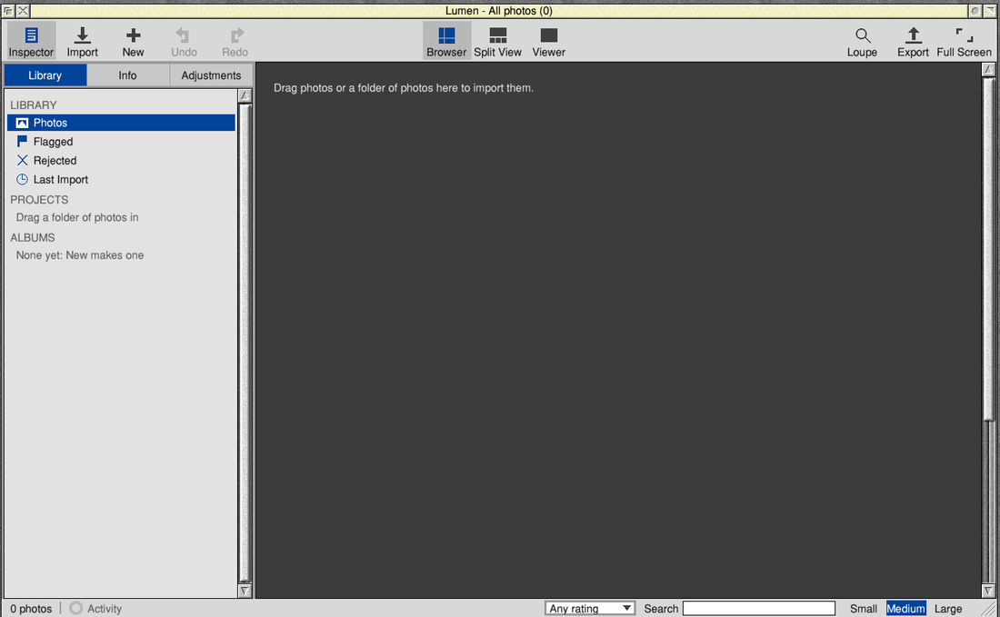
Click Menu on Lumen's icon bar icon for its menu:
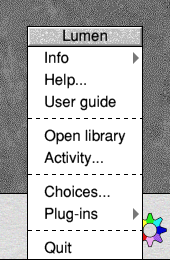
| Item | Does |
|---|---|
| Info | Lumen's version and author. |
| Help... | Lumen's short help file. |
| User guide | This guide, in your web browser. |
| Open library | Opens Lumen's window (so does clicking the icon). Its submenu exports, imports or checks the library (Chapter 15). |
| Activity... | What Lumen is doing now, and what it has done (Chapter 3). |
| Choices... | Lumen's settings (Chapter 17). |
| Plug-ins | Switch plug-ins on and off, add and remove them (Chapter 16). |
| Quit | Leaves Lumen. |
Where your library is kept
Lumen keeps its library in your Choices directory (<Choices$Write>.Lumen.Library), so it's there every time you start. To keep it somewhere else, on a bigger disc for instance, see Chapter 17. To back it up or take it to another computer, see Chapter 15.
3 Finding your way round the window
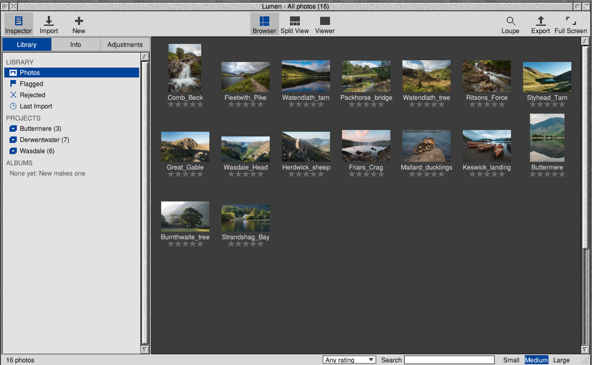
Lumen has one main window, in four parts:
- The toolbar along the top.
- The inspector on the left, with three tabs: Library, Info and Adjustments.
- The Browser, the big area of thumbnails on the right.
- The bottom bar: how many photos are shown and selected, what Lumen is doing, the rating filter, the search box and the thumbnail size.
The toolbar
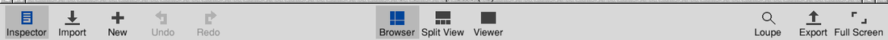
| Button | Does | Key |
|---|---|---|
| Inspector | Shows or hides the inspector. | I |
| Import | Reminds you how to import (by dragging, Chapter 4). | |
| New | Makes a new album (Chapter 6). | |
| Undo | Takes back the last change to the photo you're adjusting (Chapter 10). Grey when there's nothing to take back, and in the Browser. | Ctrl+Z |
| Redo | Does again what Undo took back. | Ctrl+Y |
| Browser | Thumbnails only. | V goes round the three |
| Split View | One photo large, with a strip of thumbnails under it. | |
| Viewer | One photo, as large as the window. | |
| Loupe | A round magnifier over the photo (Chapter 9). | ` |
| Export | Saves copies of photos to share (Chapter 14). | Ctrl+E |
| Full Screen | The photo alone, filling the screen. | F |
The inspector's tabs
Click a tab's name to change tab, or press W to go to the next one. Library chooses which photos the Browser shows (Chapter 6). Info shows everything about the selected photo (Chapter 13). Adjustments is where you change how a photo looks (Chapter 10).
What Lumen is doing: the bottom bar and the Activity window
Some jobs take a while: importing, making thumbnails, exporting, reading a raw photo, checking your photos' files are still there. Lumen does them in the background, so you can carry on working, and the bottom bar says what's going on. The ring beside the words is a progress donut: it fills up as the job goes on. When Lumen can't tell how far it has got (while it's still finding photos, say), a piece of the ring goes round instead. When the job is done, the bar says what happened for a minute, then just Activity.
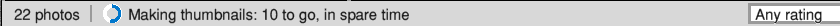
Click there (or choose Activity... on the icon bar menu) to open the Activity window. At the top, under Now, is everything that's running, each with its donut and how far it has got. Under Earlier is what Lumen has done, newest first: imports, thumbnails, exports, new photos from watched folders (Chapter 6), and anything that went wrong, in red.
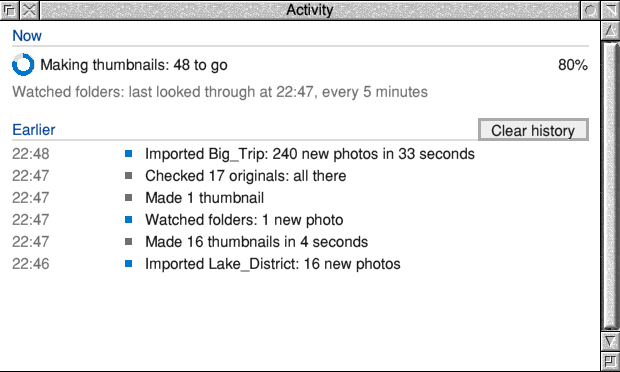
The list is kept from one session to the next. Clear history empties it.
<Choices$Write>.Lumen.Activity.Part II: Your PhotosImporting, rating, sorting and finding
4 Bringing photos in
Bringing photos into Lumen is called importing. You do it by dragging:
- Open the Filer window with your photos in it.
- Drag a directory of photos (or one photo, or several) into Lumen's window, or onto Lumen's icon on the icon bar.
Lumen looks through the directory, and the directories inside it, for photos. As it finds them, thumbnails appear in the Browser and the bottom bar counts them ("Importing Eventing: 5 found"). You can carry on working while it does this.
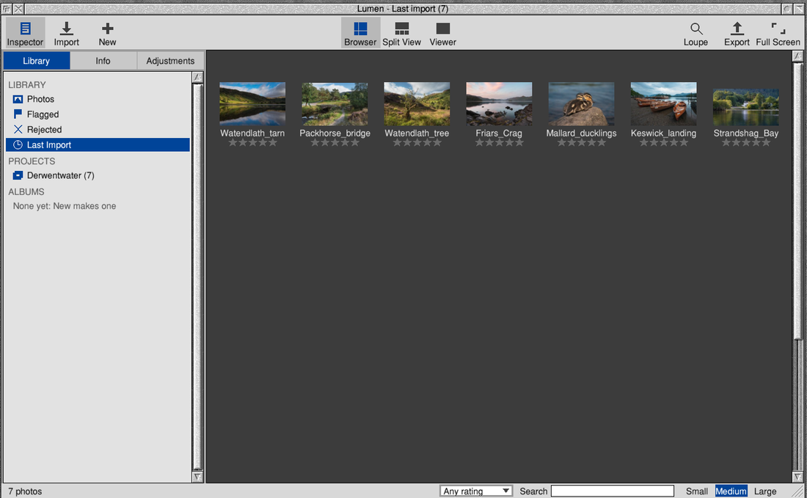
Each directory you import becomes a project, named after the directory, in the Library tab. The Browser shows the Last Import straight away, so you can see what came in.
What Lumen can import
- JPEG photos, from any camera or phone.
- PNG pictures.
- Camera raw files (NEF, CR2, CR3, ARW, RAF, ORF, RW2, DNG and many more), with the LumenRaw plug-in (Chapter 16). Without it they're still imported, and their thumbnails come once the plug-in is installed.
Other files in the directory are left alone. Applications (directories whose names start with !) are skipped.
5 Looking through, rating and flagging
Selecting
- Click a photo to select it. A blue frame shows the photo in focus: the one the keys work on.
- Click with Adjust to add a photo to the selection, or take it out.
- Ctrl+A selects them all; Escape clears the selection (the blue frame goes too).
- The arrow keys, Page Up, Page Down, Home and End move the focus.
- Double-click a photo, or press Return, to look at it large (Chapter 9).
Rating
Press 1 to 5 to give the selected photos that many stars, and 0 to take the stars away. Stars show under each thumbnail, in blue.
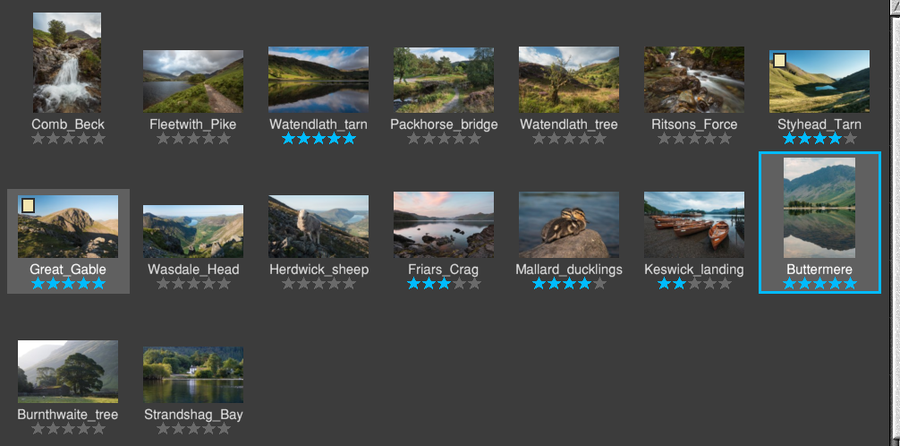
Flagging and rejecting
- Flag photos you want to come back to, whatever their stars: press /. Press it again to take the flag off. Flagged photos are listed together under Flagged in the Library tab.
- Reject the ones you don't want: press 9. Rejected photos disappear from everywhere except Rejected in the Library tab. They aren't deleted, but rejecting takes their stars away: to bring one back, show Rejected, select it and give it stars again (or press 0 for none).
All of these are on the Selection menu too: click Menu over the Browser.
Colour labels
A colour label is a coloured dot you give a photo, for whatever you like: red for "to print", green for "done", blue for "send to Mum". Choose Colour label from the Selection menu and pick a dot: the selected photos all get it, and the dot shows beside each one's name. None takes it off.
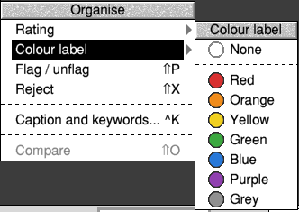
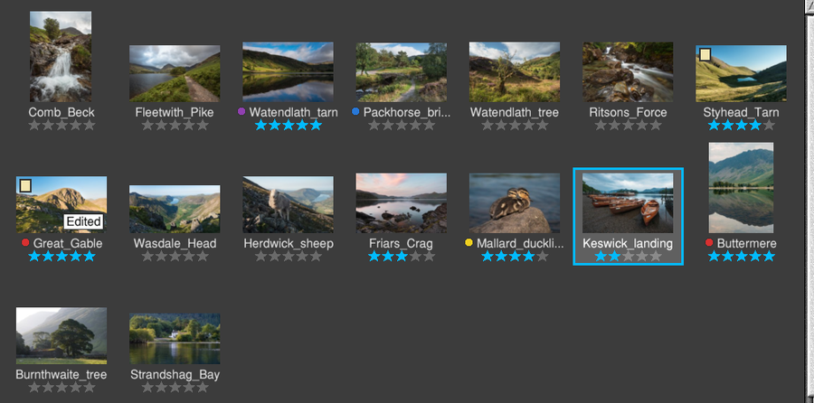
You can also click a dot in the Info tab's Label row, or in the line of dots under the histogram in the Adjustments tab: click the photo's own dot again to take it off. Searching for a colour's name (red, blue) finds the photos with that label.
Thumbnail size
Click Small, Medium or Large at the right of the bottom bar.
6 Projects, albums, stacks and watched folders
The Library tab chooses what the Browser shows. Click any line in it.
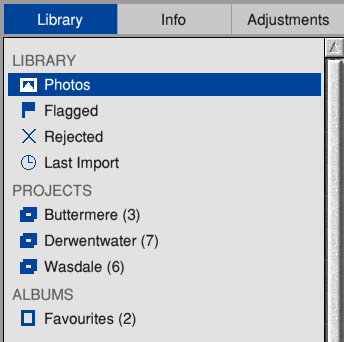
| Line | Shows |
|---|---|
| Photos | Every photo in the library (except rejected ones). |
| Flagged | Photos you've flagged. |
| Rejected | Photos you've rejected. |
| Last Import | The photos from the last thing you dragged in (including any that were already in the library). |
| Missing Files | Photos whose files Lumen can't find (only shown when there are some, Chapter 8). |
| Projects | One for each directory you imported. The number is how many photos it shows (rejected ones aren't counted). |
| Albums | Your own collections, and smart albums (with a magnifying glass) that gather photos for you. |
Albums
A project holds every photo from one directory. An album holds whichever photos you choose, from any project. A photo can be in as many albums as you like; it's still only one photo, so stars and adjustments are the same in all of them.
- Select the photos you want in the album.
- Click New on the toolbar, and follow Album from selection to the right.
- Type a name straight away (the box is ready for it: don't click in it), and press Return.
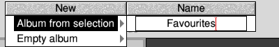
To add more photos later, select them and choose Album → Add selection to from the Browser's menu. To take photos out of an album, show the album, select them and choose Album → Remove from this album. New → Empty album makes an album with nothing in it yet. Album from selection is greyed out until you've selected some photos.
Smart albums
A smart album fills itself: you say what it should hold, and it gathers every photo that fits, now and later. Click New on the toolbar and choose Smart album... (or Album → New smart album... on the Browser's menu).
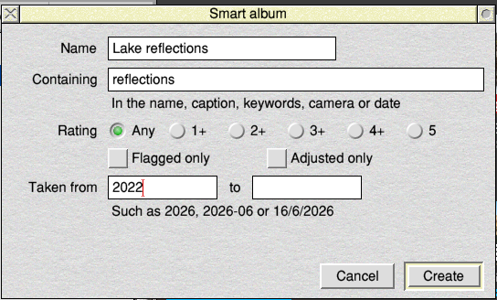
| Setting | Gathers |
|---|---|
| Containing | Photos with all these words in their name, caption, keywords, camera, project or date. Empty means any. |
| Rating | Photos with at least this many stars. |
| Flagged only, Adjusted only | Only flagged photos; only photos you've adjusted. |
| Taken from ... to | Photos taken between these dates. Type a year (2026), a month (2026-06) or a day (2026-06-16 or 16/6/2026). Leave either empty for no limit. |
Click Create, and the album appears in the Library tab with a magnifying glass, showing how many photos it holds. If you were searching when you made it, it starts with your search words. When a photo gets a new keyword or another star, it joins (or leaves) the album straight away.
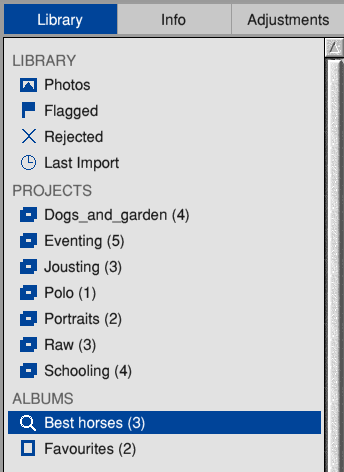
To change what a smart album looks for, click Menu over it in the Library tab and choose Edit smart album.... You can't add photos to a smart album yourself (it's greyed out in Album → Add selection to): change its settings instead.
Stacks
A stack keeps photos that belong together in one place: several shots of the same view, a burst of a bird taking off, a bracket of exposures, or the versions of a photo (Chapter 12). One photo in the stack is its pick: the best one, which stands for the rest.
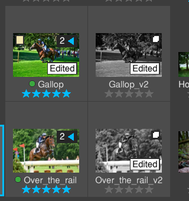
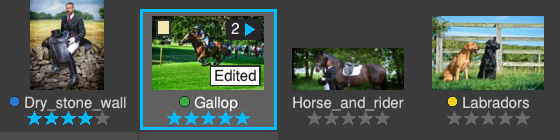
- Stack photos: select them and press Ctrl+G. The one with the focus (the outlined one) becomes the pick.
- Open or close a stack: click the number on its pick, or press S. Closed, a stack takes up one place in the Browser; open, all its photos show, on a grey band.
- Choose another pick: open the stack, click the photo you prefer, and press \.
- Unstack: select photos and press Ctrl+U.
- Auto-stack: choose Versions and stacks → Auto-stack, seconds apart from the Browser's menu, type a number of seconds and press Return. Photos taken within that many seconds of each other are stacked: just right for bursts and brackets. It works on the selected photos, or on all those shown if none are selected.
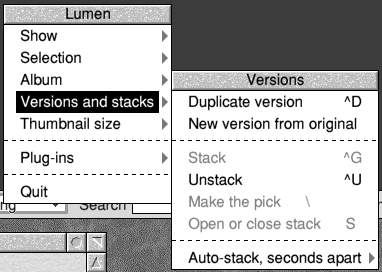
Stacks close up in Photos, projects and Last Import. Albums, Rejected and searches show every photo, stacked or not, so nothing can hide from you there.
Renaming and deleting
Click Menu over a project or album in the Library tab. Its menu lets you rename it, delete the album (its photos stay in the library) or remove the project (see Chapter 8).
Watched folders
If you go on putting photos into a directory after importing it (a camera card copied there every week, say), Lumen can watch it: click Menu over the project in the Library tab and choose Watch for new photos. From then on Lumen looks in the directory, and the ones inside it, when it starts, when you open its window again, and every few minutes, and brings in any photos that are new. It also finds photos that had gone missing and have come back. The project says watched beside its name.
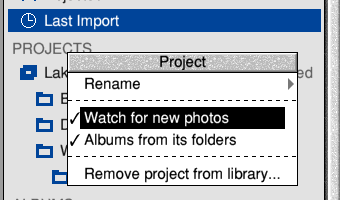
Albums from folders
If you sort your photos into directories (one for each place, or each day), Lumen can turn them into albums. Choose Albums from its folders on the project's menu: each directory inside the project's directory becomes an album, listed under the project in the Library tab with a folder icon. An album holds the photos in its directory and in the directories inside that, so a folder holds its own photos and those of the folders inside it too.
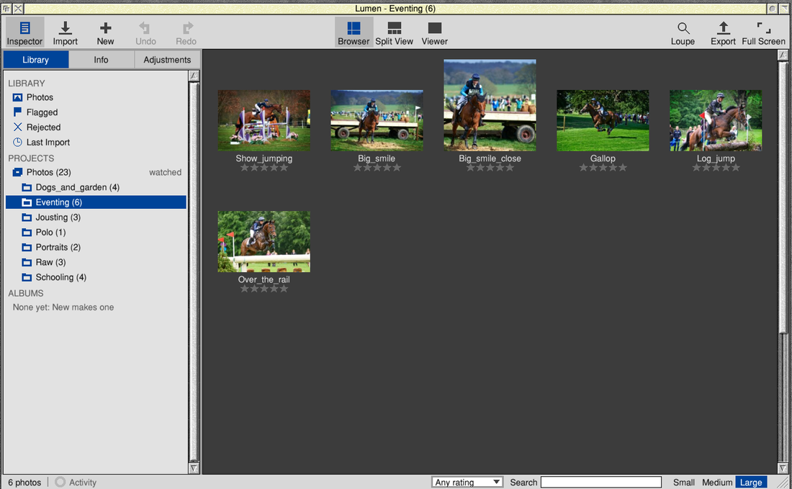
These albums look after themselves: when a photo comes into a folder, moves to another or goes, the albums follow. You can't add photos to them or rename them yourself (the menu says Follows its folder). Untick Albums from its folders and they go; the photos stay in the project.
7 Keywords and finding photos
Captions and keywords
A caption is a line about the photo ("The knights shake hands after the joust"). Keywords are words or short phrases you'll want to find it by later: places, people, subjects, events. Give them once, and searches and smart albums can find your photos for years.
- Select one or more photos (or show one in the Viewer).
- Press Ctrl+K (or choose Selection → Caption and keywords..., or click the Caption or Keywords line in the Info tab).
- Type a caption, press Tab, and type keywords with commas between them.
- Press Return, or click Save.
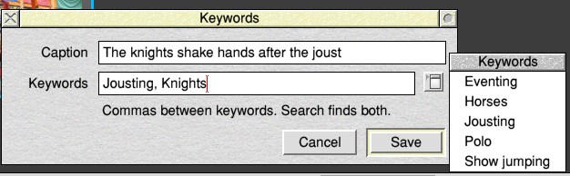
The button beside the keywords lists every keyword you've used: choose one to add it, so the same place is always spelt the same way.
With several photos selected, the window shows the caption only if they all have the same one, and the keywords they all have. Keywords you add go on all of them; keywords you take out of the list come off all of them; keywords that only some of them have are left alone. So you can select a whole day's photos and add "Holiday 2026" to every one in one go.
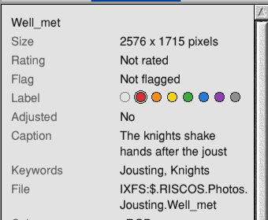
Searching
Click in the Search box in the bottom bar and type. The Browser shows only the photos that match, as you type. Lumen looks in each photo's name, its caption and keywords, its colour label's name, its camera's make and model, the date it was taken and its project's name. Type several words to find photos that match all of them. Escape empties the box.
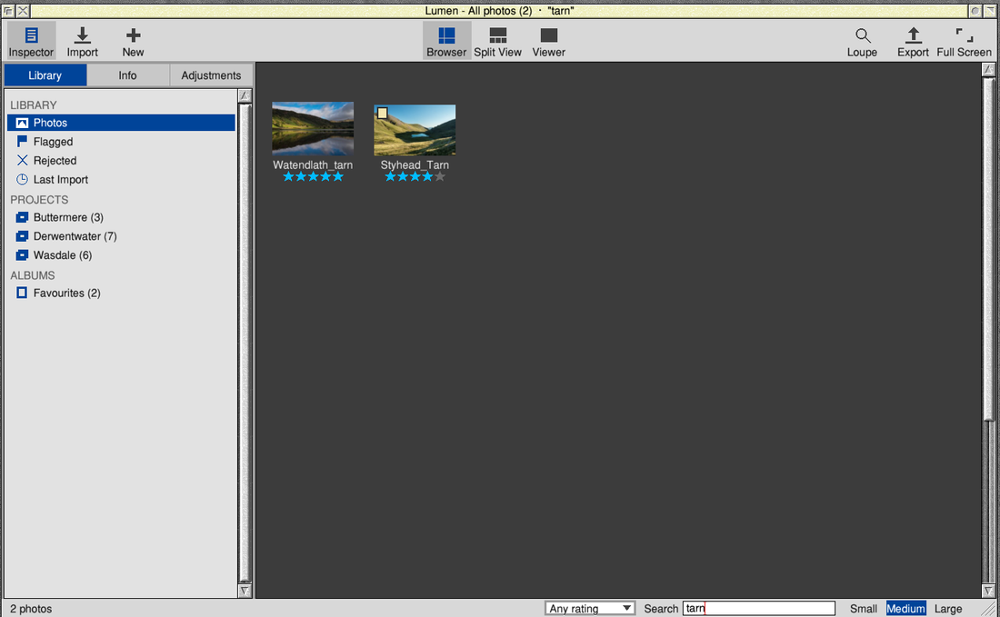
2022 for a year, or 2022:08 (or 2022-08) for a month.By stars
Click the rating filter (Any rating) in the bottom bar and choose how many stars a photo needs to be shown.
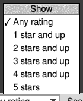
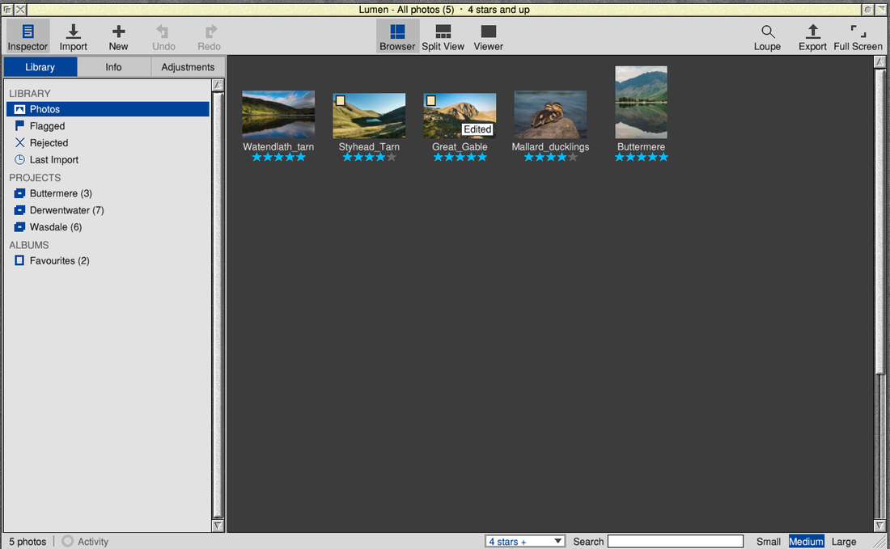
The filter and the search work together, and with whatever the Library tab has chosen: "five-star photos in the Eventing project with Nikon in their details" is three clicks and a word.
8 Removing photos, and photos that have moved
Removing photos from the library
Select the photos and press Delete (or choose Selection → Remove from library...). Lumen asks first.
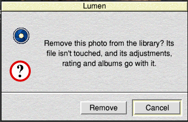
Removing takes the photo out of the library: its stars, adjustments and album places go with it. Its file isn't touched. You can import it again later.
To remove a whole project, click Menu over it in the Library tab and choose Remove project from library.... Lumen says how many photos that is before it does it.
Photos that have moved
Lumen remembers where each photo's file is. If a file has gone (you moved or renamed it, or it's on a disc that isn't there), Lumen marks the photo Missing, and the Library tab gets a Missing Files line listing them.
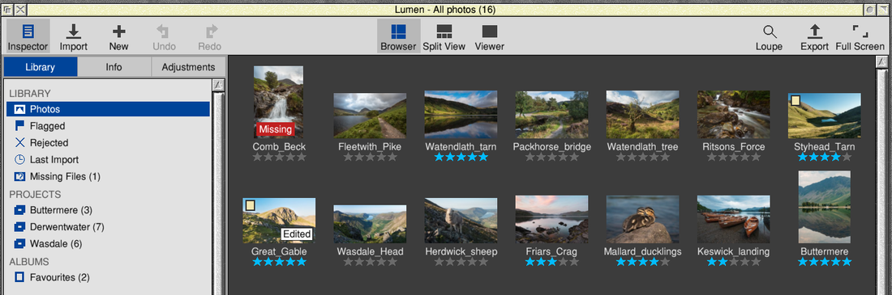
Lumen checks when it starts, and whenever you open its window again. A missing photo keeps its stars and adjustments, and you can still see its thumbnail, but you can't look at it large or export it until it's found.
To find photos again: if a disc was missing, put it back and close and reopen Lumen's window. If you moved the files, drag the directory they're in now into Lumen (just that directory). Lumen recognises them by their contents and takes their new place. Nothing is imported twice.
Part III: Making Photos BetterLooking closely, adjusting, cropping
9 Looking closely: the Viewer
Double-click a photo, or press Return, and it fills the window: this is the Viewer. Lumen shows a quick, soft version first, and the sharp one a moment later.
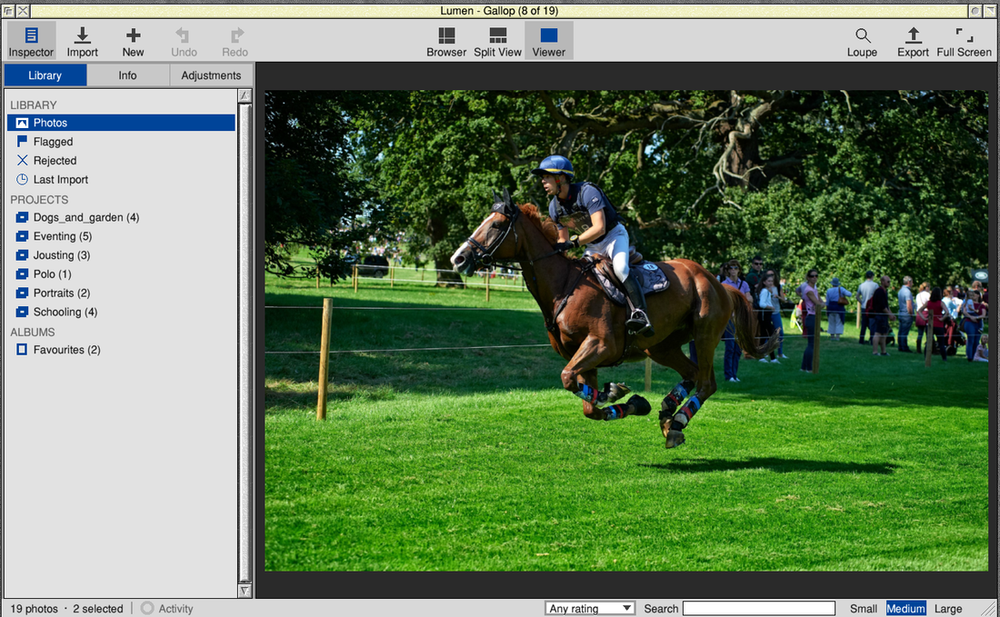
- ← and → go to the previous and next photo.
- Escape goes back to the Browser.
- The rating, flag and reject keys work here too.
Split View
Click Split View (or press V) to see the photo with a strip of thumbnails under it. Click a thumbnail to show that photo above. It's a quick way to go through photos and rate them as you look.
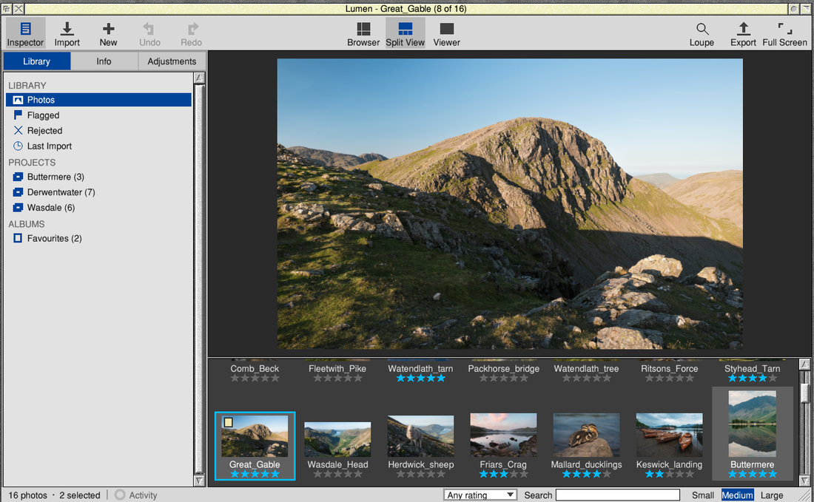
Seeing every detail
- 100%: click a point on the photo, or press Z, to zoom to 100% at that point (one pixel of the photo for each pixel of the screen). Drag to move about; click without dragging, or press Z again, to see it whole.
- The loupe: click Loupe on the toolbar or press ` (the key left of 1). A round magnifier follows the pointer, showing that part of the photo at 100%. Click with Adjust to change it to 200% or 400% (the sharp detail takes a moment to arrive); click with Select to leave it where it is (and again to make it follow the pointer). Press ` or Escape to put it away.
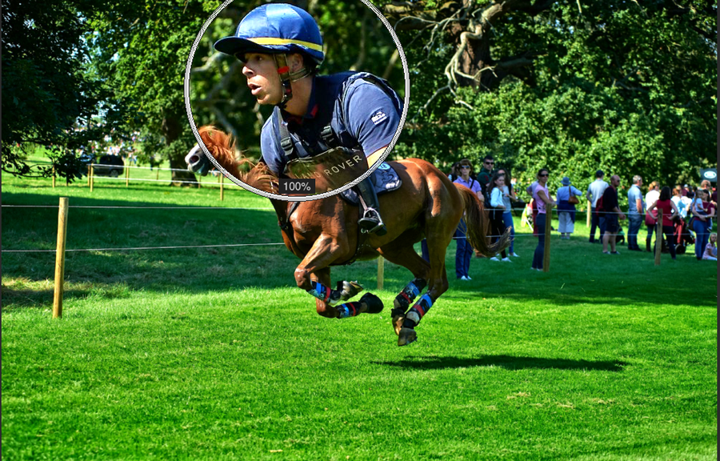
Comparing two photos
To choose between two shots of the same thing, select both in the Browser and press O (or choose Compare from the Selection menu). The first is pinned on the left; the other is beside it on the right, as large as the window allows.
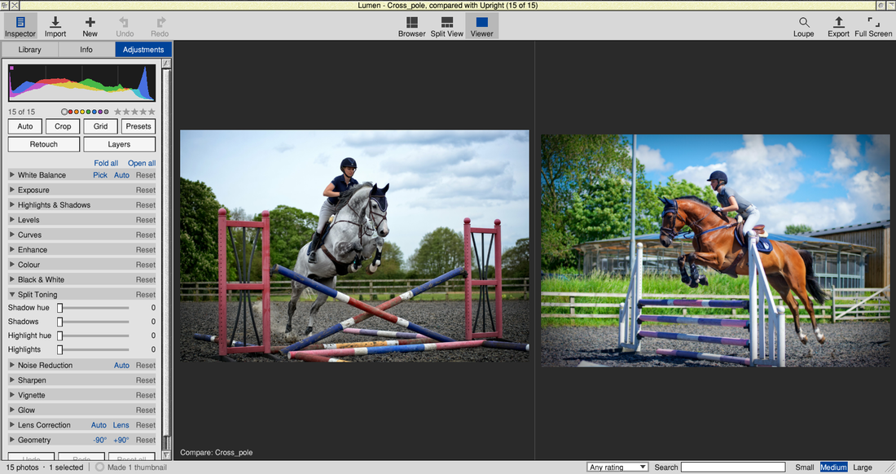
- In the Viewer, O (or Compare with the next on the Photo menu) pins the photo you're looking at and shows the next beside it.
- ← and → change the photo on the right; the pinned one stays. Rate, flag and label as you go: the keys work on the photo on the right.
- Return pins the photo on the right instead, and shows the next beside it: a quick way to find the best of a run, keeping the winner pinned.
- O or Escape stops comparing. Zooming to 100%, cropping or the loupe stop it too.
Full screen
Click Full Screen or press F: the photo fills the whole screen, with nothing else. Press F or Escape to come back.
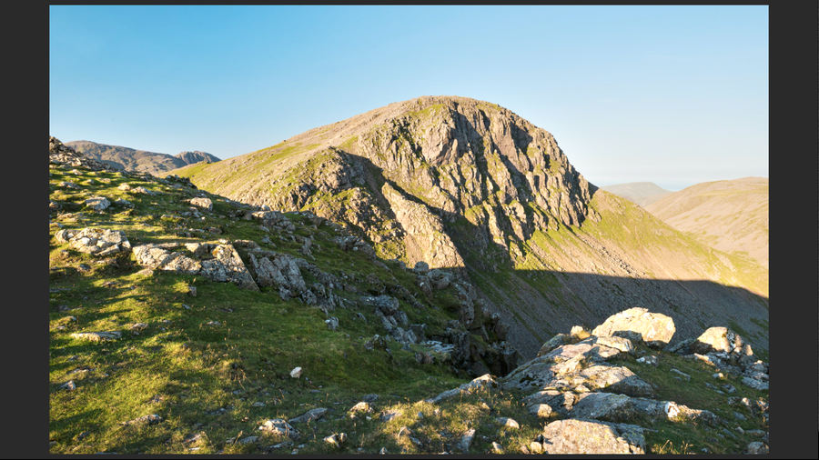
10 The adjustments
Click the Adjustments tab. If you were in the Browser, Lumen switches to Split View so you can see the photo you're adjusting.
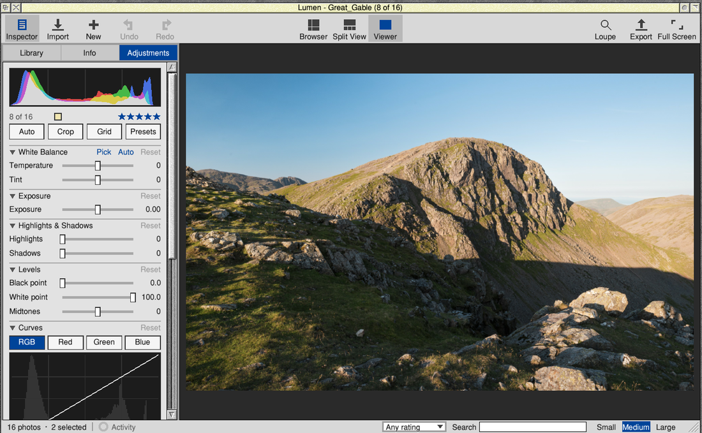
At the top is the photo's histogram (a graph of how much of the photo is dark, middle and light: left to right), its place in the list, its flag, its colour label (click a dot to change it) and its stars. Under that are the buttons Auto, Crop, Grid and Presets, then Retouch and Brush (Chapter 11), and then the adjustments, in groups.
Using the sliders
- Drag a slider's knob, or click on its track, to change it. The photo changes as you drag.
- Click a slider with Adjust to put it back to its starting value.
- Click a group's name to fold it away, and again to open it.
- Each group has a Reset link, which puts back every slider in the group.
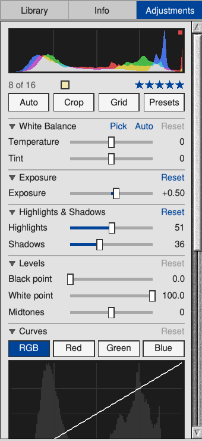
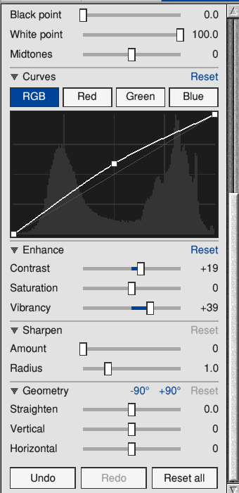
The groups
| Group | Sliders | Use it to |
|---|---|---|
| White Balance | Temperature, Tint | Make colours look natural: a photo that's too blue or too orange. Pick then lets you click something in the photo that should be white or grey; Auto guesses. |
| Exposure | Exposure | Make the whole photo lighter or darker, in stops (+1 is twice as bright). |
| Highlights & Shadows | Highlights, Shadows | Bring back detail in a bright sky (Highlights) or in dark shadows (Shadows), without changing the rest. |
| Levels | Black point, White point, Midtones | Set how dark the darkest parts and how light the lightest parts are, and the brightness in between. |
| Curves | (a graph) | Fine control of brightness from dark to light, for all colours (RGB) or one at a time (Red, Green, Blue). Click the line to add a point and drag it; click a point with Adjust to remove it. |
| Enhance | Contrast, Saturation, Vibrancy | More (or less) punch. Vibrancy adds colour mostly where there's little, so skin doesn't go orange. |
| Colour | Hue, Saturation, Luminance, for each of eight colours | Change one range of colours and leave the rest: a deeper blue sky, quieter greens, warmer oranges. See below. |
| Black & White | Amount, Red, Green, Blue | Turn the photo black and white, choosing how light each colour comes out: like a coloured filter on a black and white film camera. See below. |
| Split Toning | Shadow hue, Shadows, Highlight hue, Highlights | Tint the dark parts one colour and the light parts another: warm highlights and cool shadows for a film look, or brown or blue for a toned black and white print. A hue is a colour round the colour wheel (0 red, 30 orange, 60 yellow, 120 green, 180 cyan, 210 blue, 300 magenta); its strength says how much. |
| Noise Reduction | Luminance, Colour | Smooth away the speckles in photos taken in poor light. See below. |
| Sharpen | Amount, Radius | Crisper edges. A little goes a long way. |
| Vignette | Amount, Midpoint | Darken the corners to draw the eye in (a negative Amount), or lighten them. See below. |
| Glow | Amount, Spread, Highlights, Warmth | Let the bright parts spill a soft light round them, for a luminous, sunlit look. See below. |
| Geometry | Straighten, Vertical, Horizontal | Level a sloping horizon, and correct buildings that lean back (perspective). -90° and +90° turn the photo a quarter. |
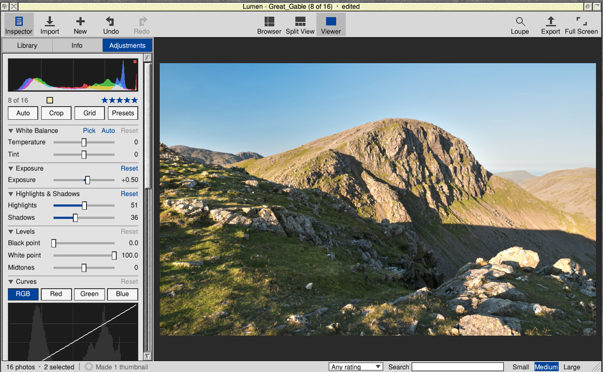
Colour
The Colour group changes one range of colours at a time. Click one of the eight swatches (red, orange, yellow, green, aqua, blue, purple, magenta) and its three sliders appear under them:
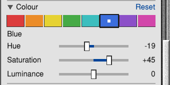
- Hue turns those colours towards their neighbours: blue towards aqua or purple, orange towards red or yellow.
- Saturation makes them stronger, or takes them away (-100 leaves them grey).
- Luminance makes them lighter or darker: a darker blue makes a sky deeper without touching the grass.
Colours between two swatches get some of each, so changes blend smoothly, and greys and whites are left alone. A pale sky is part aqua and part blue, so it changes less than a deep blue one.
Black & White
Amount takes the colour away: at 100 the photo is black and white, and in between it's partly faded. Red, Green and Blue say how much each of the photo's colours counts towards the grey: raise Red and red and orange things (skin, autumn leaves, a sunset) come out lighter; lower Blue and a blue sky or lake comes out darker and dramatic, as a red filter does on film. They start at 30, 59 and 11, the mix that looks most like the colour photo's own brightness.
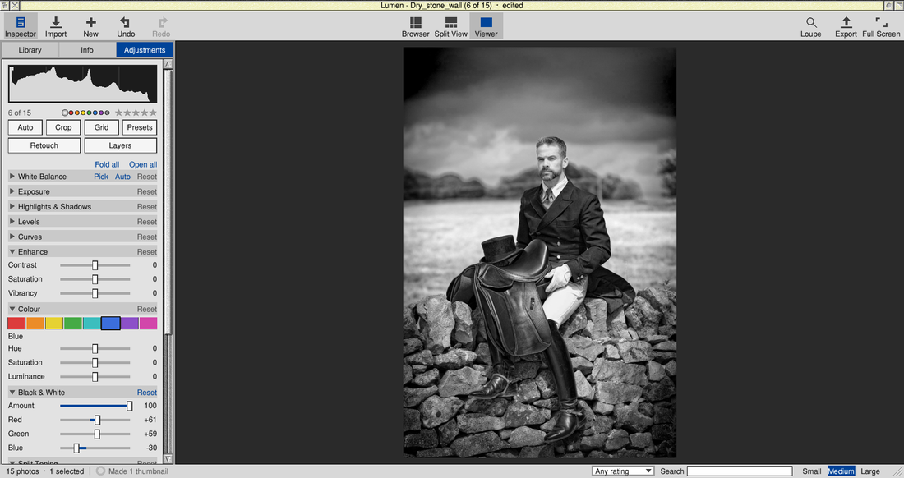
Split Toning comes after it, so you can tint the black and white: brown in the shadows for an old print, or a cool blue.
Noise Reduction and Vignette
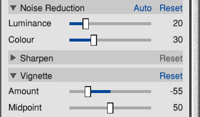
Photos taken in poor light, or at a high ISO, are speckled with noise. Colour takes out the blotches of colour (it smooths the colour, not the detail, so it's safe to use generously); Luminance smooths the grainy speckle while keeping edges sharp. Look at 100% (Z) to judge it: too much Luminance makes skin and leaves look waxy. Noise reduction comes before sharpening, so the two work together.
A vignette darkens the photo towards its corners: a negative Amount darkens, a positive one lightens. Midpoint is how far out from the middle it starts (lower starts sooner). It follows the crop: the corners are always the corners you see.
Glow
Glow gives a photo the soft, luminous look of sunlight through fur, hair or leaves. Lumen takes the light of the bright parts, spreads it widely, and lays it back over the photo, so highlights spill a gentle halo into their surroundings while the edges underneath stay sharp. Photographers call it an Orton effect, or bloom.
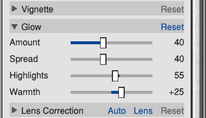
- Amount is how strong the glow is: 20 to 40 is subtle, more is dreamy.
- Spread is how far the light spills: low for a sheen close round the bright edges, high for a haze across the photo.
- Highlights says what glows: high, only the brightest parts (a backlit edge, sky, water); low, the mid-tones too, which softens the whole photo, as for a portrait.
- Warmth tints the glow golden, as late sun does, or (below 0) cool.
The glow follows the crop and straightening, like the other adjustments, and is in thumbnails, exports and prints. The Sunlit Garden style uses it (Chapter 12).
Before and after, Undo, and Auto
- Before and after: press M to see the photo without your adjustments, and again to see them. The photo says "Before" while you're looking at it.
- Undo (Ctrl+Z) and Redo (Ctrl+Y), on the toolbar or at the bottom of the tab. They work on the photo you're adjusting, so they're grey in the Browser.
- Reset all removes all your adjustments from the photo.
- Auto (or A) sets white balance, exposure, levels, contrast and vibrancy for you, gently: a good start, which you can then change.
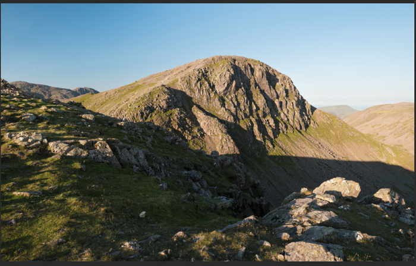
11 Cropping, straightening, retouching and brushing
Click Crop in the Adjustments tab, or press C. Lumen shows the whole photo with the crop over it; the parts outside are darkened.
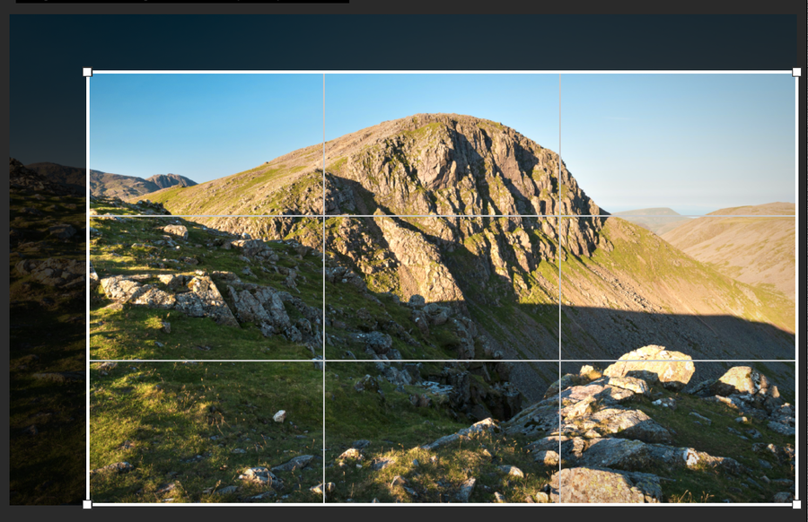
- Drag a corner or an edge to move it.
- Drag inside the crop to move it all.
- Drag outside it to draw a new one.
- Crop shape on the Photo menu keeps the crop to a shape: Free, Original, Square, 3:2, 4:3 or 16:9.
- Return (or the Done button) finishes; Escape puts the crop back as it was.
The Grid button, or G, lays lines over the photo: thirds, quarters or a fine grid (for straightening).
Straightening
Drag the Straighten slider in the Geometry group. A fine grid appears over the photo while you drag, to line the horizon up with. [ and ] turn the photo a quarter left and right.
Painting things out: Retouch
A speck of dust on the sensor, a flowerpot behind your dogs, a crisp packet on a beach: click Retouch in the Adjustments tab, or press R, and click on it. Lumen paints it out with a patch from close by, which it chooses for you.
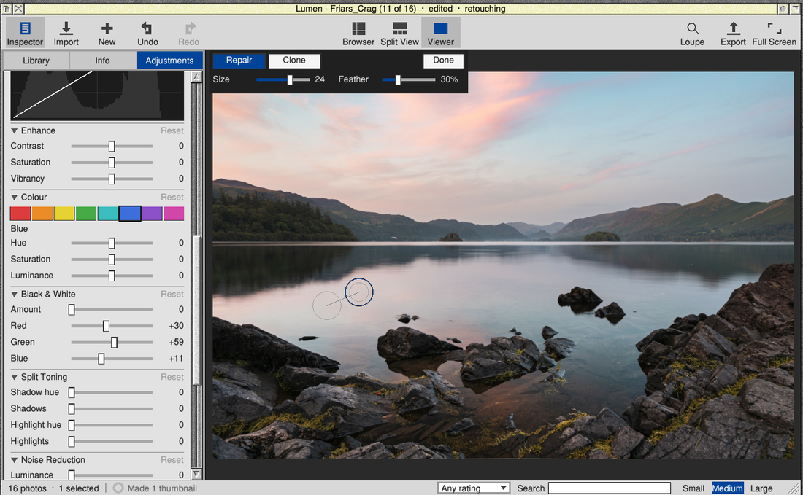
The tool's controls are in a box at the top of the photo:
- Repair (usually best) takes the texture from the patch but matches its colour and brightness to what's round the spot, so it blends in. Clone copies the patch exactly as it is: use it where there's a hard line to carry on, such as a wall's edge.
- Size sets the size of the circle. A circle follows the pointer over the photo, so you can match it to what you're painting out before you click: a little bigger than the blemish is right. [ and ] make it smaller and larger.
- Feather is how much of the circle's edge fades into the photo. The inner ring shows where the painting is complete. A spot with too much feather lets a ghost of the blemish show; too little can leave a visible edge.
- The sliders change the spot you placed (or moved) last as well as new ones: if a spot doesn't quite cover the blemish, make it bigger. Lumen chooses a new patch to fill it from.
- Drag a spot to move it, or drag its grey circle to fill it from somewhere else. Click a spot with Adjust to take it away.
- Done, Return or Escape puts the tool away. Undo works on spots as on everything else.
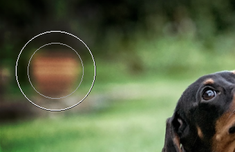
Painting on adjustments: Brush
Sometimes only part of a photo needs a change: a sky a little too bright, a face in shadow, a field of flowers that should glow. Click Brush in the Adjustments tab, or press B, choose what to paint, and drag over the photo:
- Dodge lightens and Burn darkens, as a darkroom printer did by hand.
- Saturate makes colours stronger; Desaturate makes them quieter (at full strength, grey).
- Size and Feather are the brush's size and soft edge, as for Retouch; Strength is how much: for Dodge and Burn, in stops (EV) of light, up to 2.
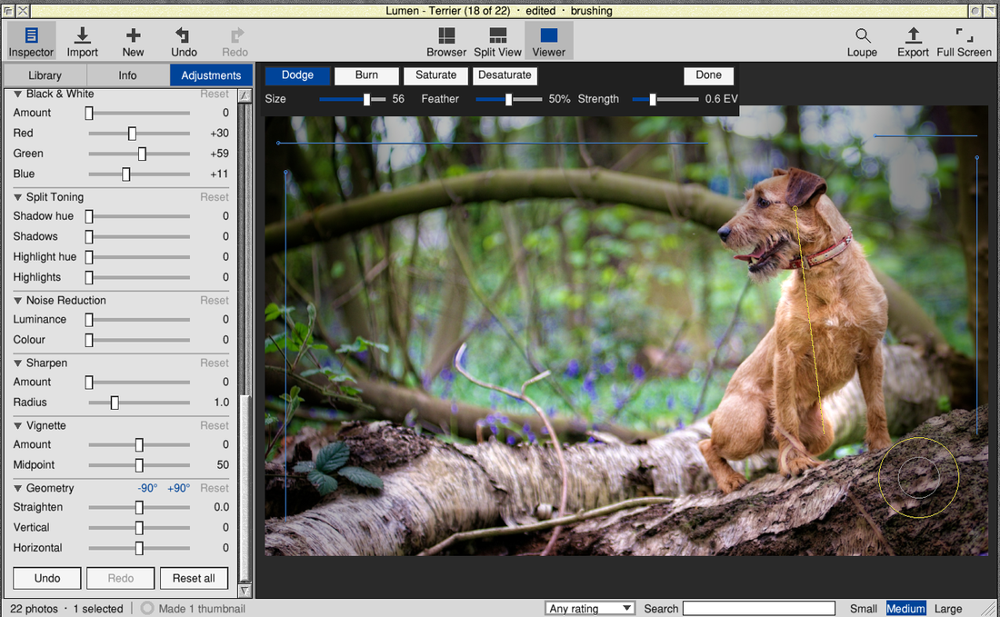
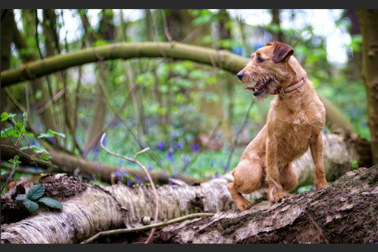
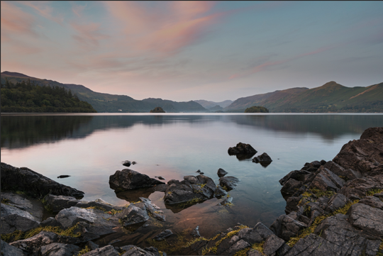
- Each stroke's path is drawn over the photo in its colour: yellow for Dodge, blue for Burn, red for Saturate, grey for Desaturate.
- Going over the same place in one stroke doesn't add up; a second stroke over the first does. So for a stronger effect, paint again.
- The sliders change the stroke you painted last, so you can paint first and then judge how strong it should be.
- Click a stroke's path with Adjust to take that stroke away.
12 Styles, presets, versions and copying adjustments
Styles
A style is a ready-made look: Lumen comes with fifteen. Open a photo in the Viewer, click Menu over it, and go to Presets → Styles (or click Presets in the Adjustments tab). As you move the pointer down the list, the photo shows each style in turn, so you can compare them. Nothing is kept yet: move off the list, or press Escape, and the photo is as it was. Click a style to keep it.
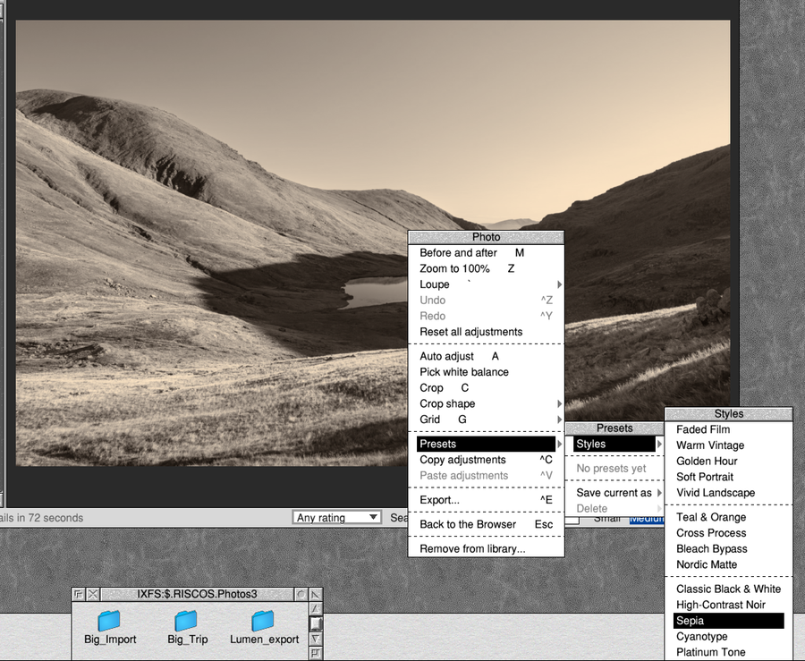
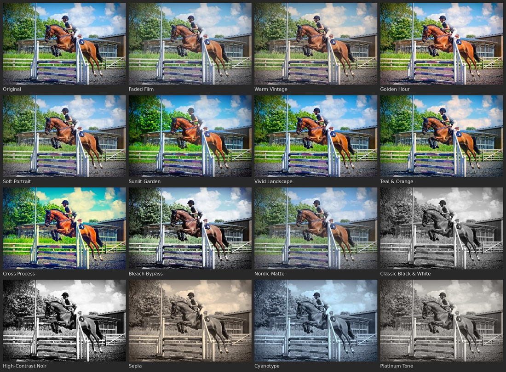
| Style | What it does |
|---|---|
| Faded Film | Lifted blacks and soft contrast, a touch warm: an old print. |
| Warm Vintage | Warm, faded and a little yellow in the highlights. |
| Golden Hour | The warm, glowing light just before sunset. |
| Soft Portrait | Gentle contrast, warm skin, open shadows. |
| Sunlit Garden | Fresh greens, warm fur and skin, and a soft glow round the light (made from Andrew Youll's own look for his dog photos). |
| Vivid Landscape | Rich colour and depth for skies, water and hills. |
| Teal & Orange | Cinema grading: warm skin and highlights, cool shadows. |
| Cross Process | Strong, shifted colour, as slide film developed as negative. |
| Bleach Bypass | Silvery, low colour and hard contrast. |
| Nordic Matte | Cool and quiet, with soft blacks. |
| Classic Black & White | A neutral black and white with full tones. |
| High-Contrast Noir | Deep blacks and bright whites, for drama. |
| Sepia | The warm brown of a toned print. |
| Cyanotype | The Prussian blue of the sun print. |
| Platinum Tone | Soft, warm grey tones with a long scale. |
A style sets ordinary sliders, so it's only a starting point: after choosing one, look in the Adjustments tab and change anything you like. The toned styles (Sepia, Cyanotype, Platinum Tone) use Split Toning:
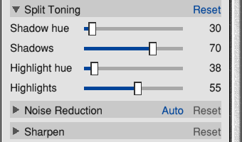
A style replaces the photo's look (its colours and tones), but keeps its crop and straightening. Undo takes it off again. To give many photos the same style, select them in the Browser and choose Selection → Apply preset → Styles (there the style is used straight away, as there's no single photo to show it on).
Copying adjustments to other photos
Photos taken at the same time often need the same changes. Adjust one, then:
- Press Ctrl+C to copy its adjustments.
- Go back to the Browser, select the other photos, and press Ctrl+V.
Every selected photo gets the same adjustments. Both are on the Selection menu, and on the Photo menu in the Viewer.
Versions: trying another look
Sometimes a photo deserves two looks: colour and black and white, or a wide view and a tight crop. Rather than choosing, make another version: press Ctrl+D (or choose Duplicate version on the Photo menu, or on the Browser's Versions and stacks menu). Lumen makes a second version of the photo with the same adjustments, and shows it, ready to change. New version from original makes one as it came from the camera instead.
Versions share the photo's file: only the adjustments are new, so a version takes no space. Each has its own stars, flag and adjustments, and starts with the caption, keywords and albums of the one it came from. It's named after the file with _v2, _v3 and so on, and it's stacked with its original, so they stay together (Chapter 6). The Info tab says which version a photo is ("2 of 3 of this photo").
Presets
A preset is your own style: a set of adjustments with a name, to use again on any photo. Click Presets in the Adjustments tab (or Menu over the photo, then Presets). Under Styles come your own presets:
- Save current as: type a name and press Return to keep this photo's adjustments.
- Choose a preset's name to use it on this photo.
- Delete → a preset's name to delete it.
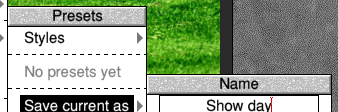
To use a preset on several photos at once, select them in the Browser and choose Selection → Apply preset. Like a style, a preset keeps each photo's crop and straightening.
13 What the camera recorded: the Info tab
Click the Info tab to see everything about the selected photo: its size, rating, flag, colour label (click a dot to change it), caption and keywords (click them to change them, Chapter 7), which version it is and its stack, file and colour space, and then everything the camera recorded (called EXIF): camera, lens, exposure, date, and, if the camera knew, where it was taken.
The tab scrolls: there can be a lot. Photos from some programs and phones have less; a PNG usually has none.
Part IV: Sharing and Setting UpExporting, printing, raw files, Choices and help
14 Exporting and printing photos
To share a photo with its adjustments (by email, on the web, or to print), export it: Lumen makes a new file. The original is never changed.
- Select the photos in the Browser (or show one in the Viewer).
- Click Export on the toolbar, or press Ctrl+E.
- Choose the format, size, colour, sharpening and names in the Export box.
- Drag the file icon into a Filer window of a directory you can write to, to save it there.
| Setting | Choose |
|---|---|
| Format | JPEG for sharing (small files); PNG when no quality may be lost (much larger files). |
| Quality | For JPEG, 1 to 100. Higher keeps more detail but makes larger files. 90 suits most photos. |
| Size | Full size; shrunk so the longer side is 3840 (4K screens), 2048 or 1024 pixels (email and the web); or Fit in a box, such as 1920 × 1080 for a full-HD screen or a slideshow. Photos are never made bigger. |
| Colour | sRGB for screens, the web and most printing services; Adobe RGB or Display P3 for wider colour, when the printer or program that will use the file asks for it. The file says which it is (an ICC profile). |
| Sharpen | Sharpening for the size written: Low for screens, Standard or High for prints. It's added to the photo's own Sharpen. |
| Names | For several photos: how to name the files. {name} is the photo's name; add {n} or {nnn} for a number (001, 002...), {date}, {year}, {month}, {day} or {time} for when it was taken, {project}, {camera} or {rating}. {date}_{name}_{nnn} makes 2016-08-04_Gallop_001. |
The Export box remembers what you chose for next time.
With several photos selected, the icon is a directory: drag it to a Filer window, and Lumen makes a directory with that name and puts one file for each photo in it. You can also type a full pathname in the name box and click Save, or drag the icon into another program (one photo at a time) to send it there.
Exports happen in the background; the bottom bar shows how far they've got ("Exporting 3 of 16", with its donut), and the Activity window lists each export when it's done (Chapter 3).
Printing
Lumen prints through RISC OS's printer drivers, so first choose your printer in !Printers (in the Printing directory), as for any other program.
- Select the photos (or show one in the Viewer).
- Press Ctrl+P, or choose Print... on the Selection or Photo menu.
- Choose the copies, the size and how many to a page, and click Print.
| Setting | Does |
|---|---|
| Fit the page | Each photo as large as it fits on the paper (or in its space, with several to a page), all of it showing. |
| Fill the page | Each photo filling the printable area (or its space); a little is cut off where its shape differs. |
| Given size | At most this many centimetres wide and high, keeping the photo's shape (15 × 10 is the usual postcard print). |
| Per page | 1, 2, 4, 6 or 9 photos to a page, each in an equal space; or As many as fit of the given size, to cut out. |
| Gap | The space between photos, in millimetres: room to cut between them. |
| Names under the photos | Each photo's name printed under it: a contact sheet. |
| Turn photos to suit the page | A landscape photo in a portrait space is turned a quarter, so it's printed larger. |
| Sharpen for print | Makes up for the softening of ink spreading on paper. |
Lumen first prepares each photo at your printer's resolution, in the background (the bottom bar shows how far it has got), then prints them all.
Several photos to a page
Choose how many under Per page. Lumen divides the printable part of the page into that many equal spaces, with the Gap between them, and puts a photo in each, in the order they're selected. The last page has what's left over.
- With Turn photos to suit the page ticked, a landscape photo in a tall space is turned on its side, so it's printed as large as it can be (as above). Untick it to keep every photo upright, smaller.
- Fill the page fills each space; each photo is cut to its own space, never spilling into the next.
- As many as fit uses the size you give (say 9 × 6 cm) and fits as many of that size on each page as it can, turning them if more fit that way. It's the way to print small prints to cut out.
- Names under the photos prints each photo's name under it, so a page of small prints becomes a contact sheet: a quick way to show someone a shoot and let them choose.
15 Backing up, moving and checking the library
Everything Lumen knows about your photos (stars, flags, labels, captions, keywords, every adjustment, versions, projects and albums) is in its library. Lumen can copy all or part of it to a new library, bring another library's photos into yours, and check the library for anything wrong. All three are on the Open library submenu of Lumen's icon bar menu.
Exporting a library
Exporting a library makes a new library: a directory you can open in Lumen on another computer, keep as a backup, or give to someone.
- For the whole library, choose Open library → Export library... on the icon bar menu. For some photos, select them and choose Selection → Export as library.... For a project or an album, click Menu over it in the Library tab and choose Export as library....
- Give the new library a name. Leave Include the original photos ticked to copy the photos' files into it.
- Drag the directory icon into a Filer window (or type a full pathname and click Save).
The new library has everything about the photos you chose: their versions with every adjustment, their stars, flags, labels, captions and keywords, their projects, the albums they're in (with just those photos), their stacks, your presets, and their thumbnails, so it opens ready to use. Exporting the whole library brings its smart albums and folder albums too.
With Include the original photos ticked, the files are copied into an Originals directory inside the new library, in a directory for each project (the folders inside a project's folder are kept). The box says how much that is. The new library uses its own copies, so it can go to any disc or computer. Unticked, the new library refers to the photos where they are now: it's much smaller, but only of use where those files can be found.
The export happens in the background, like exporting photos, and the Activity window says when it's done. Your library and its photos aren't changed.
Importing a library
Importing a library brings another library's photos into yours, with everything Lumen knew about them: photos you worked on on another computer, say, or that a friend exported for you.
- Drag the library's directory onto Lumen's window or its icon bar icon (or choose Open library → Import library... and drag it into that window).
- Lumen shows what would come across, before anything changes.
- Leave Copy its photos into this library ticked to copy the files into your library's Originals directory, and click Import.
- Photos already in your library (the same file, wherever it is) aren't added twice. If the other library has a version of one with different adjustments, it comes in as another version of your photo.
- Projects, albums and keywords are matched by name: photos from a project called Holiday join your Holiday project, and photos from an album called Best go into your Best. You gain any presets you didn't have. A smart album comes in if you have none of that name.
- Folder albums and watched folders stay with the other library: a project that comes in isn't watched.
- When it's done, the Browser shows the new photos (Last import).
Checking the library
Choose Open library → Check library... on the icon bar menu. Lumen looks at:
- the catalogue file itself, which a power cut or a failing SD card can damage;
- entries that point at nothing: versions whose photo or project has gone, album places and keywords of photos that have gone, and stacks with only one photo left;
- thumbnails: missing files, ones that couldn't be made, and leftover files of photos no longer in the library;
- previews: ones out of date, or of photos no longer in the library (Chapter 16).
If it finds anything, click Repair. Lumen first keeps a copy of the catalogue as Catalogue-backup in the library, then puts everything right: missing thumbnails are made again, leftover ones deleted, and broken entries mended. A photo that had lost its project isn't lost: it goes into a project called Recovered.
REINDEX) after writing the backup with VACUUM INTO. If the catalogue is damaged beyond that, Lumen says so, and Export library still copies whatever can be read into a new one. Export and import attach the other catalogue to Lumen's and copy its rows in one transaction, so a library is never left half merged; the files are copied first, a few at a time. A library's catalogue records the directory it was written in, and when it's opened from somewhere else, the paths inside it are moved with it.16 Camera raw files and plug-ins
Many cameras can save raw files: everything the sensor saw, before the camera made a JPEG of it. They hold more detail in bright and dark parts, but every camera maker has its own format. Lumen reads them with a plug-in called LumenRaw, which uses the free LibRaw library and knows over a thousand cameras.
Installing LumenRaw
Install the LumenRaw package with PackMan. It goes inside Lumen (in !Lumen.Plugins.LibRaw), and Lumen finds it the next time it starts. (A plug-in added from the Plug-ins menu, below, works at once, without restarting.) Raw files you imported before then get their thumbnails as soon as it's there.
Working with raw files
Import them as you would JPEGs. Thumbnails come from the preview the camera saved in the file, so they're quick. To show a raw photo in the Viewer, Lumen develops it (with the camera's own white balance and colour); a big file takes a few seconds. Everything else (stars, adjustments, export) is the same as for any photo.
Previews: raw photos that open at once
So you don't wait each time, Lumen keeps a preview of each raw photo: the photo developed at the size the Viewer works on (1600 pixels along its longer side), kept in the library beside the thumbnails. Once the thumbnails are made, Lumen makes the previews in the background, newest photos first; the status bar says Making previews. A photo with a preview opens in the Viewer straight away. The first time you open one without, Lumen keeps what it developed as its preview, so it's quick from then on.
The photo you're looking at always comes first: until it's on the screen, Lumen does nothing else, and if its preview was being made in the background just then, the Viewer carries on with that rather than starting again.
Previews are only copies: your photo files and your changes aren't touched. They take about 300 to 500 KB each. In Choices (Chapter 17) you can have them made for All photos (JPEGs open faster too), only Raw files (the usual), or None; Discard removes them all to free the space.
Previews directory, named after the photo and a number worked out from what the picture depends on: the file's size and date, its orientation, and which LumenRaw made it. If any of those changes (a new version of LumenRaw, say), the old preview simply isn't used, and a new one is made. 100%, the loupe and exports still use the photo itself, at full quality. Exported libraries don't take their previews with them: the library they go into makes its own.LumenRaw has a guide of its own, the LumenRaw User Guide, inside the plug-in: open !Lumen.Plugins.LibRaw.Guide.index/html. It explains how raw photos are developed, and lists every camera LumenRaw knows.
The Plug-ins menu
Choose Plug-ins on the icon bar menu (or on the Browser's menu) to see Lumen's plug-ins.
- A plug-in's name: choose it to switch it off (it stays installed, but Lumen doesn't use it), and again to switch it back on. Lumen remembers. A raw photo already showing in the Viewer stays as it is; the change shows from the next one you open.
- Add plug-in... opens a window to drag a plug-in's directory into; Lumen copies it into its Plugins directory and uses it at once. You can also drag a plug-in's directory onto Lumen's window. A plug-in is a directory with a file called
Pluginin it; if what you drag isn't one, Lumen says so. - Remove → a plug-in deletes it from Lumen, after asking (Cancel keeps it). With no plug-ins installed, the menu says None installed and Remove is greyed out.
17 Choices
Choose Choices... from the icon bar menu.
| Choice | Does |
|---|---|
| Library | Where the library is kept. Leave it empty for the usual place, in your Choices. To use another place, type a full pathname, or drag a directory onto the window. It's used from the next time Lumen starts. |
| Export | The format, size and JPEG quality the Export box starts with. |
| Thumbnails | The thumbnail size Lumen starts with. Saving changes the size at once, too. |
| Previews | Which photos Lumen keeps a preview of, so they open at once in the Viewer: Raw files (the usual), All photos, or None (Chapter 16). Discard removes the previews there are, after asking; unless you choose None, they are made again in the background. |
| Check the photos' files are still there when Lumen opens | Switch this off if your photos are on discs that are often away, so they aren't all marked missing (Chapter 8). |
| Folders | Watch folders I import for new photos and Make albums from the folders inside them do for every directory you import from now on what the project menu does for one (Chapter 6). Look in watched folders every so many minutes; 0 means only when Lumen starts and when its window opens. |
Click Save to keep them, or Cancel to leave them as they were.
18 Getting help
Lumen works with RISC OS's !Help program. Start !Help (double-click it in the Apps directory on the icon bar), then point at anything in Lumen's windows or menus, and !Help says what it is and what it does.
Help... on the icon bar menu shows Lumen's short help file; User guide opens this guide.
Part V: The Part of TensQuick answers
19 Ten keys to learn first
| Key | Does |
|---|---|
| 1 to 5, 0 | Stars; none |
| / | Flag / unflag |
| 9 | Reject |
| Return | Look at the photo in focus in the Viewer |
| ← → | Previous / next photo |
| Escape | Back (to the Browser; out of full screen, crop or 100%) |
| V | Browser, Split View, Viewer |
| M | Before and after |
| Ctrl+Z | Undo (Ctrl+Y redoes) |
| Ctrl+E | Export (Ctrl+P prints) |
20 Ten problems and what to do about them
| Problem | What to do |
|---|---|
| Lumen says it needs SharedUnixLibrary or ARMEABISupport. | Install them with PackMan, then start Lumen again. |
| New photos I put in an imported directory haven't appeared. | Lumen only brings them in by itself if the project is watched: tick Watch for new photos on the project's menu (Chapter 6). To have it look now, close and reopen Lumen's window. Or drag the directory in again: only the new photos are added. |
| A raw file has a grey thumbnail, or says to install something. | Install LumenRaw with PackMan (Chapter 16), then start Lumen again. If it's installed, check it's ticked in the Plug-ins menu: Lumen says when it's switched off. |
| Photos show "Missing". | Their files have moved or their disc isn't there. Put the disc back and reopen the window, or drag the files' new directory into Lumen (Chapter 8). |
| Keys don't do anything. | Click in Lumen's window first, so it has the input focus. If you're typing in the Search box, the keys go there: click on a photo. |
| A photo I rejected has disappeared. | Click Rejected in the Library tab, select it and give it stars again (or press 0): rejecting took its stars away. |
| Fewer photos are shown than I expected. | Check the rating filter says Any rating, the Search box is empty, and the Library tab has Photos chosen. The title bar shows what's being shown. |
| My prints come out grey. | Your printer is set to print in grey: in !Printers, open its Configure window, tick Colour, and choose Save choices (Chapter 14). The Print box warns about this. |
| Some photos seem to have vanished after I stacked them. | A closed stack shows only its pick. Click the number on the pick (or press S) to open it (Chapter 6). |
| Thumbnails are wrong or missing, or Lumen behaves oddly after a power cut. | Choose Open library → Check library... on the icon bar menu, and Repair if it finds anything (Chapter 15). A copy of the catalogue is kept first. |
21 Ten things for experienced users
- The library is a directory:
Catalogue(an SQLite database) andThumbs(256-pixel JPEGs in 256 subdirectories). Originals are referenced where they are, never written to (only a library exported or imported with its photos has copies of them, in its ownOriginals). Back it up with Export library..., or copy the directory while Lumen isn't running; Repair leavesCatalogue-backupbeside the catalogue. - Choosing the library:
Lumen$Library, set before Lumen starts, wins over the Choices window. Otherwise it's the Choices setting, else<Choices$Write>.Lumen.Library(orLumenLibrarybeside !Lumen if there's no Choices yet). - Recognising photos: each original is identified by a hash of its size and its first and last 64 KB, which is how re-imports are skipped and moved files relinked.
- Recipes: adjustments are stored per photo as a short text recipe; retouch spots (
spotlines) and brush strokes (brushlines, their points in ten-thousandths of the photo) are applied first, on the photo turned upright, so they stay on what they cover whatever the crop; then the pipeline runs geometry (quarter turns, straighten, perspective, crop) in 16-bit linear light, then white balance, exposure, local highlights and shadows, levels, curves and enhance, then the black and white mix and split toning (after saturation, so it tints black and white), then the glow (the bright parts of a 96-cell colour map of the photo, developed, blurred and screened over it in linear light), then the vignette, then sharpening at the output size. A style is the look part of a recipe; while one is shown from the menu, nothing is written to the catalogue. - Speed: the Viewer works on a proxy of up to 1600 pixels, and a half-size copy while a slider is dragged. Lumen is built for any ARMv7 with VFPv3; where the processor has NEON, libjpeg-turbo's JPEG code and Lumen's own scaling to the screen and sharpening use it, chosen when Lumen starts (VFPSupport_Features), with exactly the same results as the plain code. Set
JSIMD_FORCENONEorLumen$NEONto 0 to compare (LumenBench times both).*Set Lumen$JPEGEighths 1lets JPEGs be decoded at any eighth of their size (3/8 for a 6000-pixel photo shown at 1600), which is fewer pixels but without libjpeg-turbo's NEON code; LumenBench times it, so you can see which is quicker on your machine. Given a photo (*Run <Lumen$Dir>.Benchfollowed by the photo's pathname), LumenBench exports it at full size instead and says where the time goes: for a raw file, LumenRaw developing it and reading its picture back, then Lumen's adjusting, sharpening and writing. Every change in the Viewer is scaled to the size shown before the window is redrawn, so the redraw is a straight copy; a raw file's full size is read in the background once the photo is shown, and until then the loupe enlarges the picture on screen. - Background work (imports, thumbnails, exports, checking files, watched folders) runs in short slices on null events, so the desktop never waits; Lumen asks for null events only while there's work to do. Thumbnails nobody is looking at are made with
Wimp_PollIdlebetween slices while another task has the input focus. Watched folders wake Lumen withWimp_PollIdlewhen they're due; unchanged files are skipped by size and date without being read. The Styles item asks forMessage_MenuWarning, and only while that list is open does Lumen look at the pointer (every 5 cs) to show the style under it. - Colour: Adobe RGB (1998) and Display P3 photos (from their ICC profile, or EXIF's colour space and interoperability index) are converted to sRGB by matrix in linear light. Other profiles are treated as sRGB.
- Plug-ins are directories in
!Lumen.Pluginswith a textPluginfile ofName,Version,Kind,Program,PackageandDescriptionlines. LumenRaw runs once per job in a task window and hands back a JPEG or PPM and a few lines of details through<Wimp$ScrapDir>.LumenRaw. Switched-off plug-ins are listed in<Choices$Write>.Lumen.Plugins. - Choices are a text file,
<Choices$Write>.Lumen.Choices, ofkey valuelines; the Activity history is<Choices$Write>.Lumen.Activity, onetime kind textline per entry, the last 200 kept. - Versions, keywords and smart albums live in the catalogue: a version is a row of its own sharing its original; keywords are a table of their own; a smart album keeps its rule as text and is worked out afresh each time it's shown. Captions and keywords go out as XMP (
dc:description,dc:subject) in a JPEG's APP1 or a PNG's iTXt chunk, and come in the same way. Printing renders each photo to a scrap JPEG at the printer's resolution (150 to 300 dpi) and plots it withJPEG_PlotScaledinside the printer driver's rectangle loop.
Appendix: keys, mouse and menus
Keys (in Lumen's window)
| Key | Does |
|---|---|
| V | Next layout: Browser, Split View, Viewer |
| I | Show / hide the inspector |
| W | Next inspector tab |
| F | Full screen (again, or Escape, to come back) |
| 1–5, 0 | Stars for the selected photos; none |
| 9 | Reject |
| / | Flag / unflag |
| Arrows, Page Up, Page Down, Home, End | Move the focus in the Browser (in the Viewer, ← →: previous / next photo) |
| Return | Open the photo in focus in the Viewer (while cropping: finish) |
| Escape | Clear the selection (and the focus); in the Viewer, back to the Browser (also leaves crop, 100%, the loupe and picking white balance) |
| Ctrl+A | Select all |
| Delete | Remove the selected photos from the library (asks first) |
| Ctrl+C / Ctrl+V | Copy / paste adjustments |
| Ctrl+E | Export |
| Ctrl+P | |
| Ctrl+K | Caption and keywords |
| Ctrl+D | Duplicate version (in the Viewer: and show it) |
| Ctrl+G / Ctrl+U | Stack / unstack the selected photos (Browser) |
| S | Open or close the focused photo's stack (Browser) |
| \ | Make the focused photo its stack's pick (Browser) |
| Ctrl+Z / Ctrl+Y | Undo / redo an adjustment (Viewer) |
| M | Before and after (Viewer) |
| Z | 100% / whole photo (Viewer) |
| ` | Loupe on / off (Viewer) |
| A | Auto adjust (Viewer) |
| C | Crop (Viewer) |
| G | Next grid: none, thirds, quarters, fine (Viewer) |
| [ / ] | Turn a quarter left / right (Viewer; while retouching or brushing: the brush smaller / larger) |
| { / } | Less / more feather (while retouching or brushing) |
| R | Retouch on / off (Viewer) |
| B | Brush on / off (Viewer) |
| O | Compare: the selection (Browser), or this photo with the next (Viewer); again to stop. While comparing, Return pins the photo on the right |
Mouse
| Where | Select | Adjust |
|---|---|---|
| A thumbnail | Select it (double-click: open it) | Add to or take from the selection |
| The photo in the Viewer | 100% there (at 100%: drag to move, click to see it whole). With the loupe: pin it where it is | With the loupe: 100%, 200%, 400% |
| A slider | Drag or click to set it | Back to where it started |
| A group's name | Fold it away or open it | |
| The curve | Add a point, or drag one | Remove a point |
| The photo, retouching | Paint out a spot; drag a spot or its source to move it | Take a spot away |
| The photo, brushing | Drag to paint a stroke (click: a dab) | Take a stroke away |
| A colour label's dot (Info or Adjustments tab) | Give the photo that label (its own dot again: none) | |
| A line in the Library tab | Show those photos | – |
| The number on a stack's pick | Open or close the stack | |
| A colour swatch (Colour group) | Show that colour's sliders | |
| Caption or Keywords in the Info tab | Change them | – |
| The grip (bottom right) | Drag to change the window's size | |
| What Lumen is doing (bottom bar) | Open the Activity window | – |
| A style in the Styles menu | Keep it (just pointing at it shows it) | Keep it, menu stays open |
Menus
Click Menu over the Browser or the Library tab for Lumen's main menu; over the photo in the Viewer (or the Adjustments tab) for the Photo menu; over a project or album for its own menu. As everywhere on RISC OS, choosing with Adjust keeps the menu open.
| Menu | Items |
|---|---|
| Show | All photos; Flagged; Rejected; Last import; Projects →; Albums →; Rating filter → |
| Selection | Rating →; Colour label →; Flag / unflag; Reject; Caption and keywords...; Select all; Clear selection; Copy adjustments; Paste adjustments; Apply preset → (Styles →, then your presets); Compare; Export...; Export as library...; Print...; Remove from library... |
| Album | New album from selection →; Add selection to →; Remove from this album; New smart album... |
| Versions and stacks | Duplicate version; New version from original; Stack; Unstack; Make the pick; Open or close stack; Auto-stack, seconds apart → |
| Thumbnail size | Small; Medium; Large |
| Plug-ins | Each plug-in (ticked when on); Add plug-in...; Remove → |
| Photo (Viewer) | Before and after; Zoom to 100%; Loupe →; Undo; Redo; Reset all adjustments; Auto adjust; Pick white balance; Crop; Crop shape →; Grid →; Presets → (Styles →; your presets; Save current as →; Delete →); Copy adjustments; Paste adjustments; Colour label →; Caption and keywords...; Compare with the next; Duplicate version; New version from original; Export...; Print...; Back to the Browser; Remove from library... |
| A project | Rename →; Watch for new photos; Albums from its folders; Export as library...; Remove project from library... |
| An album | Rename →; Delete album... (a smart album also: Edit smart album...; an album made from a folder: Follows its folder); Export as library... |
The icon bar menu: Info →; Help...; User guide; Open library → (Export library...; Import library...; Check library...); Activity...; Choices...; Plug-ins →; Quit.
Toolbar: Inspector; Import; New; Undo; Redo; Browser; Split View; Viewer; Loupe; Export; Full Screen. Bottom bar: the photo count; what Lumen is doing (click for the Activity window); the rating filter; Search; thumbnail size.
Photo credits
All the photos in this guide are by the author, Andrew Youll (© Andrew Youll). They're shown smaller than the originals, and in Chapters 6, 7 and 10 to 14 with Lumen's adjustments, styles, versions and keywords applied. The raw photos are straight from his Nikon D700.
Lumen is © Andrew Youll, 2026, and is free software under the MIT licence: you may use, change and pass it on, keeping the copyright notice. Its source code is published with each release. The licences of the code it includes (SQLite, libjpeg-turbo, libpng, zlib and UnixLib, and LibRaw in the LumenRaw plug-in) are in !Lumen.Licences.